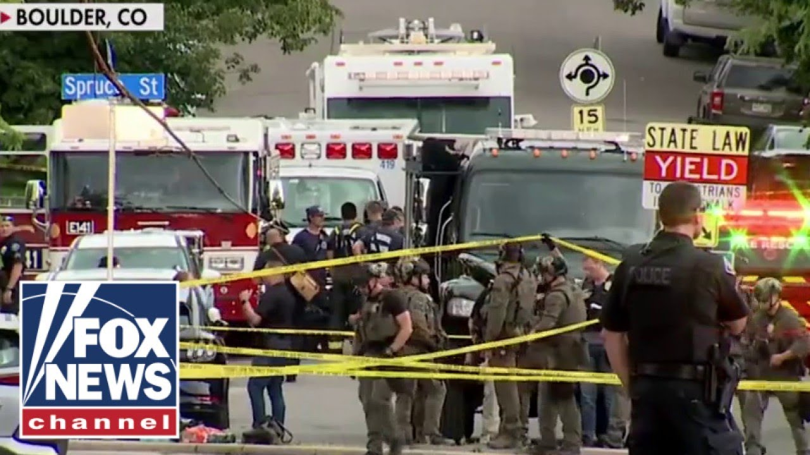

【突发新闻：科罗拉多州发生“针对性袭击”，多人受伤】
Summary: The FBI is investigating a targeted terror attack in Boulder, Colorado, where a device exploded during a pro-Israel group's organized walk, injuring multiple people. Authorities have arrested a suspect and evacuated the area, with officials preparing for a press conference.
摘要： 美国联邦调查局正在调查科罗拉多州博尔德市一起针对性恐怖袭击，当时一个支持以色列的团体正在组织游行，期间发生爆炸，多人受伤。当局已逮捕一名嫌疑人并疏散该区域，官员们正准备召开新闻发布会。

⏱️ Estimated Reading Time: 17 min
We start with the Fox News alert.
我们从福克斯新闻的警报开始。
The FBI is investigating what is being called a targeted terror attack in Boulder, Colorado.
美国联邦调查局正在调查科罗拉多州博尔德市一起被称为针对性恐怖袭击的事件。
The alleged attack happened at a mall in between 13th and 14th Street.
据称袭击发生在13街和14街之间的购物中心。
That's in downtown along Pearl Street in downtown Boulder.
该购物中心位于博尔德市中心珍珠街沿线。
We are hearing from the FBI director Cash Patel calling it a targeted uh terror attack.
我们听到联邦调查局局长卡什·帕特尔称这是一起针对性恐怖袭击。
We're also hearing uh just moments ago from the governor of Colorado, Jared Polus, who says he is closely monitoring the situation in Boulder.
就在不久前，我们还听到科罗拉多州州长贾里德·波利斯表示他正在密切关注博尔德市的局势。
His thoughts go out to the people who have been injured, impacted by this heinous act of terror.
他向那些在这起恶劣恐怖袭击中受伤和受影响的人们表示慰问。
Details are just coming in.
详细信息正在陆续传来。
Our local Denver Fox affiliate KDVR telling us that around 300 p.m. some sort of device exploded in what was an organized walk of a group that is pro-Israel that was walking in support of the hostages still held in Gaza.
我们的丹佛福克斯附属台KDVR告诉我们，大约下午3点，某种装置在一个支持以色列的团体组织的游行中爆炸，该游行旨在声援仍被扣押在加沙的人质。
We're trying to learn more.
我们正在努力了解更多信息。
We're trying to also effort some images there.
我们也在努力获取一些现场图像。
But a difficult Sunday evening news to hear of what the FBI is calling a terror attack.
但这是一个艰难的周日傍晚，听到联邦调查局所称的恐怖袭击消息。
Now, the local affiliate KDVR in Denver talking to some individuals that uh appear to be part of this group called Run for Their Lives.
现在，丹佛的当地附属台KDVR正在与一些似乎是“为生命奔跑”团体成员的人交谈。
Again, supporting having a a walk on a Sunday afternoon to support the return of all of the hostages, Israeli hostages in Gaza.
他们再次支持在周日下午举行游行，呼吁释放所有被扣押在加沙的以色列人质。
One of the organizers saying that they are devastated by this and we're trying to find out exactly what happened and why this happened.
其中一名组织者表示他们对此感到震惊，并正在努力查明究竟发生了什么以及为什么会发生这样的事。
Police have evacuated that area.
警方已疏散该区域。
If you are watching this, hearing this in the Boulder area, stay away from that downtown area.
如果你正在博尔德地区观看或听到这个消息，请远离市中心区域。
They're clearing the scene.
他们正在清理现场。
We're also hearing that local officials are preparing soon to have a press conference.
我们还听说当地官员正准备召开新闻发布会。
Well, we will learn more about this.
我们将了解更多信息。
You're seeing now.
你现在看到的是。
We've got a live shot here of Boulder, Colorado, where we're awaiting a press conference imminently.
我们这里有科罗拉多州博尔德市的现场画面，我们正在等待即将举行的新闻发布会。
That's what we know.
这就是我们所知道的。
We will continue to bring you more.
我们将继续为您带来更多信息。
I'll broaden it out.
我将进一步展开。
Uh joined here by Molly Line, Lauren Semini, and Jason Chaffitz.
呃，莫莉·莱恩、劳伦·塞米尼和杰森·查菲茨也在这里加入我们。
Not the way we thought, guys, we would start the big weekend show, but a stark reminder of the threat that we live in.
伙计们，这不是我们原以为会开始这个大型周末节目的方式，但这鲜明地提醒了我们所面临的威胁。
Molly.
莫莉。
Yeah, a targeted terror attack there in Boulder, Colorado.
是的，科罗拉多州博尔德市发生了一起针对性恐怖袭击。
That's the way this is being described.
这就是目前对此事件的描述。
And look, this is where we're expecting the press conference to occur here at any moment.
看，这就是我们预计新闻发布会即将举行的地方。
We're keeping an eye there for the authorities to step up and give us some insight into what more they know about what happened here.
我们正在密切关注，等待当局站出来，向我们透露更多他们对此事件的了解。
Uh how severe the injuries are, perhaps how many people are injured.
呃，伤势有多严重，可能有多少人受伤。
We know that there's an incredible response uh there on the ground of first responders and that that area uh in the area that they're looking at, in the area where they believe this attack occurred has expanded and expanded outward uh that they're blocking further and further out in this territory.
我们知道现场急救人员做出了惊人的反应，他们正在调查的区域，即他们认为袭击发生的区域，已经向外扩大，他们正在封锁越来越远的区域。
and of course an investigation underway as well.
当然，调查也在进行中。
We're still looking for more information about a perpetrator or perpetrators.
我们仍在寻找关于一名或多名作案者的更多信息。
Uh so there are a lot of unanswered questions at this point in time.
呃，所以目前还有很多未解的问题。
Yeah, the Boulder Police Department expanding as you said, Molly, that evacuation area to the 1200, 1300, and 1400 blocks of Pearl Street between Walnut and Pine Street.
是的，博尔德警察局正在扩大疏散区域，正如你所说，莫莉，疏散区域扩大到珍珠街1200、1300和1400街区，位于胡桃街和松树街之间。
Also including the 1500 blocks between Pearl and Pine Street.
还包括珍珠街和松树街之间的1500街区。
I've been to this outdoor mall many times.
我曾多次去过这个露天购物中心。
Um, and on a beautiful uh, by all accounts, beautiful Sunday afternoon, people should be able to be there in peace and safety.
呃，在一个美好的周日午后，人们本应能够在那里享受和平与安全。
But a massive response.
但出现了大规模的应急响应。
Uh, Fox's 31's Jim Hulie said he was there near the ground near where this happened.
呃，福克斯31台的吉姆·胡利说他当时在事发地点附近。
Also said there was a woman in severe condition on the ground, but was able to help two other women women who had burns on their calves.
他还说有一名女子伤势严重倒地，但能够帮助另外两名小腿烧伤的女子。
So, a big response to it obviously.
显然，对此事件的响应非常迅速。
Let's listen in now.
现在让我们听听。
I believe some of the local officials holding a press conference at this moment.
我相信一些当地官员正在此时举行新闻发布会。
Very preliminary information about an attack that occurred here in downtown Boulder at about 1:26 p.m. today.
关于今天下午1点26分左右在博尔德市中心发生的袭击事件的初步信息。
At that time, uh Boulder dispatch received several calls to the county courthouse located at 1325 Pearl Street here in Boulder.
当时，呃，博尔德调度中心接到了多个打往位于珍珠街1325号的县法院的电话。
Uh the initial callers indicated that there was a man with a weapon and that people were being set on fire.
呃，最初的报警人称有一名持械男子，并且有人被点燃。
the uh initial response by our officers.
呃，我们的警官最初的反应。
We were on scene very quickly.
我们迅速赶到现场。
Uh when we arrived, we encountered uh multiple victims that were injured uh with uh injuries consistent with burns and other injuries.
呃，当我们到达时，我们遇到了多名受伤的受害者，呃，伤势包括烧伤和其他伤害。
While our officers and paramedics and fire department personnel uh got those victims quickly to the hospital, our officers were pointed out, a suspect was pointed out to our officers on the scene.
在我们的警官、护理人员和消防部门人员迅速将受害者送往医院的同时，有人向现场的警官指认了一名嫌疑人。
Our officers immediately encountered that suspect uh who was taken into custody without incident.
我们的警官立即控制了那名嫌疑人，呃，他在没有发生任何冲突的情况下被拘留。
That suspect who I'm not able to ID at this time was uh taken to the hospital with some minor injuries as well.
目前我无法确认那名嫌疑人的身份，呃，他也因轻伤被送往医院。
Uh and there's a lot more uh we're investigating right now before I'm able to release information on that person.
呃，在我们能够发布关于那个人的信息之前，我们还有很多正在调查的内容。
Uh the scene uh itself is contained, but we have a large area here in downtown Boulder uh closed off right now.
呃，现场本身已经得到控制，但我们现在封锁了博尔德市中心的一大片区域。
Businesses have been closed and we have asked people to avoid the area.
商家已经关闭，我们已要求人们避开该区域。
Uh it is not this area is not safe yet.
呃，该区域目前还不安全。
Um we're dealing with a vehicle of interest.
呃，我们正在处理一辆可疑车辆。
We're dealing with uh a large area that we are making sure it's safe before we allow people to come back into the scene.
我们正在处理一大片区域，确保其安全后才会允许人们返回现场。
Uh if your vehicle is here in the in the several block uh perimeter that we have, uh please follow our social media.
呃，如果你的车辆在我们封锁的几个街区范围内，呃，请关注我们的社交媒体。
We will announce when the roads are open and people can retrieve uh their vehicle as well.
我们将宣布道路何时开放，人们可以取回他们的车辆。
I appreciate everyone's patience as we work through this complex scene.
感谢大家在我们处理这个复杂现场时的耐心。
Uh what I will say uh lastly is this was a beautiful Sunday afternoon in downtown Boulder on on Pearl Street.
呃，我最后要说的是，这是一个美好的周日下午，在博尔德市中心的珍珠街上。
Uh and this act is unacceptable.
呃，这种行为是不可接受的。
Um we I I hope you'll join me this evening as we're working through this investigation.
呃，我希望今晚在我们进行调查时，你能与我一起。
Uh we are working I I just came from the command post.
呃，我们正在工作，我刚从指挥所过来。
We've got dozens and dozens of people here, our state, local, and federal partners working through this to figure out exactly what happened.
我们这里有数十人，包括州、地方和联邦合作伙伴，正在努力查明究竟发生了什么。
I ask for a little bit of patience as we do that, but also I ask uh that you join me uh in thinking about our victims, the families of those victims, and everyone involved in this tragedy.
我请求大家在我们进行调查时保持一点耐心，同时我也请求你与我一起，为受害者、受害者家属以及所有卷入这场悲剧的人们祈祷。
Uh our hearts go out to them.
呃，我们向他们表示慰问。
Uh and we are going to do everything we can to work as hard as we can throughout the evening to provide more information and get answers for everyone.
呃，我们将尽一切努力，整晚努力工作，为大家提供更多信息并找到答案。
Uh with that, as I stated, uh it would be irresponsible for me to speculate right now on motive and other things.
呃，正如我所说，现在推测动机和其他事情是不负责任的。
I will take maybe a handful of questions, but then I've got to go back to a briefing.
我可能会回答几个问题，但之后我必须回去参加简报会。
I had a quick one.
我有一个快速的问题。
Yes, Charles.
是的，查尔斯。
Was an actual protest going on when this occurred or were a group of people gathered and were words said that would indicate this had anything at all to do with that protest?
事件发生时是否有实际抗议活动在进行，或者一群人聚集在一起，是否有言论表明这与抗议活动有关？
So, what I will tell you on Pearl Street, it's a walking pedestrian mall downtown here.
所以，我要告诉你的是，珍珠街是市中心的步行商业区。
There was a lot of people out.
当时有很多人在外面。
Uh very beautiful day.
呃，天气非常好。
There was a group of pro-Israel uh people that were there in a peaceful demonstration.
有一群支持以色列的人在那里进行和平示威。
I wouldn't even call it a protest.
我甚至不会称之为抗议。
Um, I believe that happens frequently down here.
呃，我相信这里经常发生这种情况。
Uh, they were there in that area.
呃，他们在那个区域。
We are looking and actively interviewing victims and witnesses to determine if that group was targeted or others.
我们正在积极采访受害者和目击者，以确定该团体是否是目标，或者其他团体。
And we just don't have those answers yet.
我们目前还没有这些答案。
Those are things we hope to be able to provide you later this evening.
这些是我们希望今晚晚些时候能够提供给你的信息。
FBI is already calling it a targeted terror attack.
联邦调查局已经称其为针对性恐怖袭击。
Would you also refer to it as a terror attack?
你也会称其为恐怖袭击吗？
So, I've been in contact with our local FBI multiple times.
所以，我已多次与我们的当地联邦调查局联系。
We are in contact with them here.
我们在这里与他们保持联系。
We are not calling it a terror attack at this point.
目前我们不会称其为恐怖袭击。
Again, it's way too early to speculate motive.
再次强调，现在推测动机还为时过早。
Um, you know, I I know there's a lot out there on social media, but I asked people just to give us a little bit of patience while we work through a really complex scene.
呃，你知道，我知道社交媒体上有很多信息，但我请求大家在我们处理这个非常复杂的现场时保持一点耐心。
Um, a lot of witnesses were here.
呃，这里有很多目击者。
We've taken them to another location to debrief them and interview them.
我们已将他们带到另一个地点进行汇报和采访。
As we do that, I think the picture will become more clear.
在我们这样做的过程中，我认为情况会变得更加清晰。
Um, but it would be it would be irresponsible for me to to speculate on motive this early on.
呃，但现在推测动机对我来说是不负责任的。
We're only a couple hours into this thing.
我们才刚开始调查几个小时。
I'll go right here.
我就在这里回答。
about the suspect.
关于嫌疑人。
Can you confir the description about him because we know any picture running in social media?
你能确认关于他的描述吗？因为我们知道社交媒体上流传的任何图片。
Uh I haven't seen it.
呃，我还没有看到。
Uh and I obviously I wasn't here when he was arrested.
呃，显然他被捕时我不在这里。
All I know is it's an adult male.
我只知道是一名成年男性。
We're working to identify that person.
我们正在努力确认那个人的身份。
We're working to figure out where they're from.
我们正在努力查明他们来自哪里。
Uh and we're in contact with our federal partners as well uh as we figure that out.
呃，我们也在与我们的联邦合作伙伴联系，呃，以查明这一点。
Was something thrown at the group?
是否有东西扔向该团体？
Uh that is uh being investigated as well.
呃，这一点也在调查中。
So what we our initial call as I mentioned was a report that someone was setting people on fire.
所以，正如我提到的，我们最初的报警是有人正在点燃人们。
That is fairly consistent with the injuries that we found on scene, but we're not 100% certain how that happened and that's what we're we're doing to interview.
这与我们在现场发现的伤势相当一致，但我们并不100%确定这是如何发生的，这正是我们正在采访的内容。
There's a lot of witnesses that we're interviewing.
我们正在采访很多目击者。
I suspect within uh this evening, I suspect we'll have a better idea of exactly how those injuries occurred.
我预计今晚晚些时候，我们会对这些伤势是如何发生的有一个更清晰的了解。
Are you guys going to have additional security for Jewish and Israeli and Israeli people helping the hostages in the circle right now?
你们现在会为帮助人质的犹太人和以色列人增加安保吗？
Because this is a weekly occurrence.
因为这是每周都会发生的事情。
Are you guys going to announce some additional security measures to protect against you?
你们会宣布一些额外的安全措施来保护他们吗？
So what I will say is again I cannot confirm right now that this was targeted at a specific group of people.
所以我要再次说的是，我现在无法确认这是针对特定群体的。
Um we understand that there's a lot of tensions right now on a lot of issues in the United States and and everywhere.
呃，我们理解目前在美国和世界各地，许多问题上都存在很多紧张局势。
Once we have a clear motive, we will react accordingly.
一旦我们有明确的动机，我们将做出相应的反应。
And if that motive was a group was targeted, we will absolutely step up and ensure that uh additional security, additional presence, we want people to feel safe no matter, you know, what they're here for.
如果动机是针对某个群体，我们绝对会加强并确保额外的安保和人员部署，我们希望人们无论出于什么目的来到这里都能感到安全。
How many people were injured?
有多少人受伤？
Uh I don't have an exact number.
呃，我没有确切的数字。
What I will say is multiple.
我要说的是多人。
Um we I I can confirm that uh Boulder Community Hospital received uh multiple patients and some of those patients were transferred to other hospitals.
呃，我可以确认博尔德社区医院接收了多名患者，其中一些患者被转移到